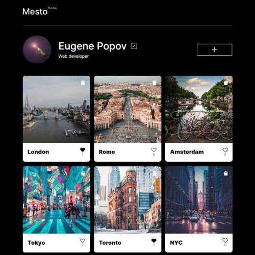
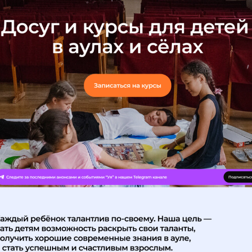
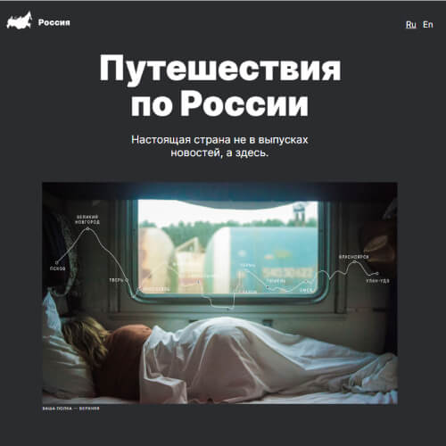
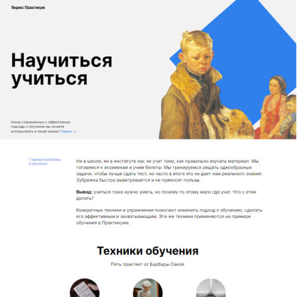

Hello! Here you can see Eugene Popov’s portfolio as web developer. I would like to show you my works
Link
A simplified analogue of the social media Instagram. The project implements the functionality of working with the API of a remote back-end server. Form validation is also implemented on the front-end. The project is completely refactored from functional JS to OOP.
Stack: HTML, CSS, JavaScript, API, OOP, Git, BEM, Figma
Link
Landing page for the non-profit organization "Balapanlar". Responsive layout of a web page with the connection of library GreenSock for implement a horizontal scroll.
Stack: HTML, CSS, JavaScript, API, JavaScript library, Git, BEM, Figma
Link
Another studying project - responsive web page for any device
Stack: HTML, CSS, Git, BEM, Figma
Link
First studying project - quite simple web page
Stack: HTML, CSS, Git, BEM
Project Balapanlar is under developing now. Release planned on end of 2022. While you can see github repository.
Link